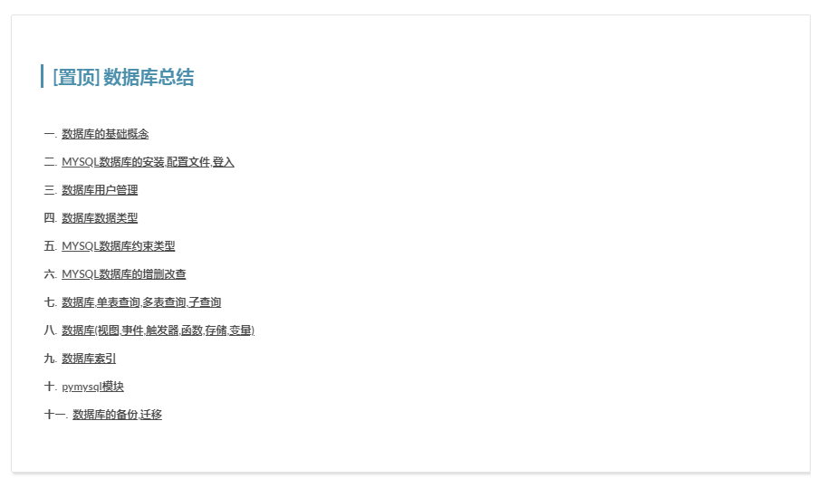
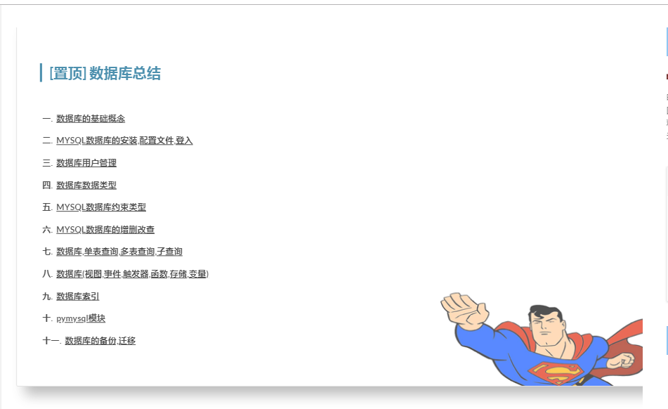

.postDesc-img {
position: absolute;
padding-bottom: 0;
float: right;
right: 0;
bottom: 0;
z-index: -1;
}
.cnblogs-post-body h3 {
text-decoration: none;
font-size: 10px;
line-height: 1px;
}
.cnblogs-post-body h2 {
color: red;
font-size: 20px;
}
.day {
padding: 54px 4% 2% 4%;
border: 1px solid #ddd;
border-radius: 2px;
transition: all 0.35s;
box-shadow: 2px 2px 3px rgba(135, 139, 144, 0.4);
margin-bottom: 50px;
margin-top: 0px;
}
.day:hover {
transform: scale(1.02);
box-shadow: 12px 12px 18px rgba(50, 50, 50, 0.4);
} <!-- 超人动画-->
<script>
let xx = document.querySelectorAll('.day');
console.log(xx);
let aa = document.querySelectorAll('.postDesc');
for (let ii = 0; ii < xx.length; ii++) {
xx[ii].onmousemove = function () {
this.querySelector('.postDesc').innerHTML='<img class="postDesc-img" src="https://images.cnblogs.com/cnblogs_com/pythonywy/1455150/o_SUPERMAN.png" alt="" style="z-index: -1">';
};
xx[ii].onmouseout = function () {
for (let i = 0; i < aa.length; i++) {
console.log(i);
aa[i].innerHTML = '';
}
};
}
</script>1.超人图片是博主自己ps的,可能随笔展示大小不一样会有点像素的变化,我处理后的图片是290*130的
2.我是通过把'postDesc'类里面替换成<img标签>实现的,你们如果要保留原来的编辑来 可以稍微修改js即可,可以问我
3.样式按照自己喜欢可以微调
4.鼠标也是博主自己画的a:hover {
cursor: url(https://www.cnblogs.com/images/cnblogs_com/pythonywy/1516412/o_Hand.png), auto;
}
a:active {
cursor: url(https://www.cnblogs.com/images/cnblogs_com/pythonywy/1516412/o_AppStarting.png), auto;
}
a:focus {
cursor: url(https://www.cnblogs.com/images/cnblogs_com/pythonywy/1516412/o_wait.png), auto;
}
p, code {
cursor: url(https://www.cnblogs.com/images/cnblogs_com/pythonywy/1516412/o_IBeam.png), auto;
}
* {
cursor: url(https://www.cnblogs.com/images/cnblogs_com/pythonywy/1516412/o_Arrow.png), auto;
}
